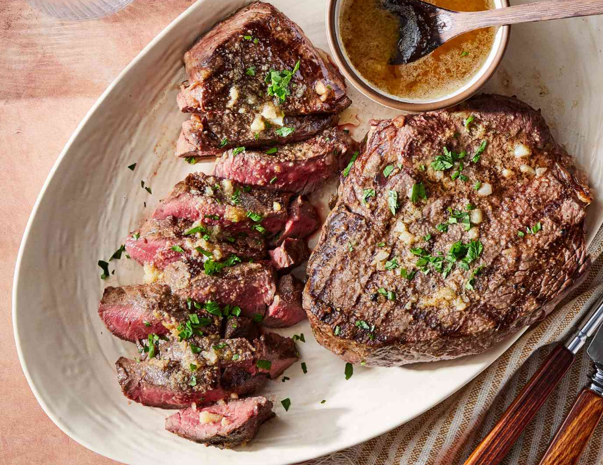

Steak

Steak with sweet potatoes and brocolli
The following is a recipe I have used to make a steak dinner. Although you can make steak with any number of different side dishes, in this recipe
I have opted for a baked sweet potato, brocolli and capsicum.
Ingredients
- 1 piece of steak, I normally go for the 200g porterhouse steak available at Aldi
- 1 onion
- 3 cloves of garlic
- 0.5kg of sweet potato, diced into 3-5cm long sides
- 0.2kg of brocolli, chopped
- 1 large red capsicum, chopped
- Olive oil
- Salt
- Various spices, I recommend, cajun and morrocan seasoning
Steps
- Turn the oven on to 200 degrees celcius.
- Place the sweet potato, brocolli, and capsicum into an over proof dish, and cover with spices and olive oil.
- Once oven is at temperature put the vegetables in for approximately 45 minutes.
- Chop the onion and cook in olive oil in a skillet on low heat until onion appears glassy.
- Crush the garlic cloves and add to the onion. Feel free to add some more spices at this step, I can recommend paprika, italian mixed herbs, cajun spices, moroccan seasoning etc...
- Remove the onions and garlic from the frying pan after 5 minutes.
- Turn the heat to medium and put the steak in the frying pan. Leave for approximately 3 minutes per side, or until cooked as preferred.
- Serve with the baked vegetables and fried onions.
Home